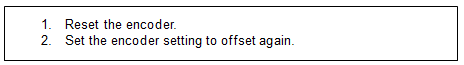
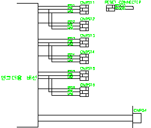
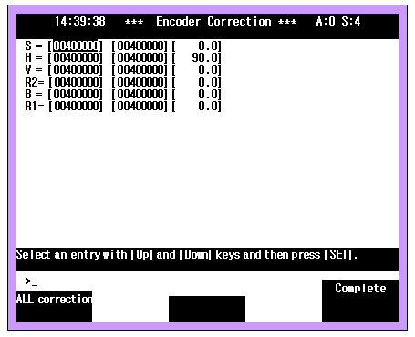

1.1.15.1. Outline
When turning on the controller power, the absolute encoder data from the encoder exceeded the working range limit of the encoder. It may occur if a new motor is installed. Place the robot on the reference position and then reset the encoder to use it in the normal working range.
1.1.15.2. Causes and checking methods

1. Reset the encoder.
To reset the encoder, connect the RST and P5E terminals of the encoders of the axes for 3 min with the controller on. Open the cover at the back of the robot's body to find connectors for resetting of the encoders.

Figure 5.47 Connector for resetting of the encoder
2. Set the encoder setting to offset again.
If the encoder is reset, the axis position will be lost. Send the robot to the reference position and set the encoder to offset again. It is recommended that the encoder is reset again just before offsetting at the robot reference position. The robot has an interference coefficient between axes so send all axes to the reference positions and set them to offset.
To set the encoder to offset, select System> 3: Robot Parameter> 5: Encoder Offset Setting> Encoder Correction (Record Position) in manual mode.
Note that pressing the ALL correction key will correct the encoder offset for all axes.
